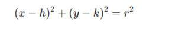

nah jadi lingkaran itu kayak titik bulat yang banyak kali, dan lingkaran juga punya titik tengan, nah kalau titik
tengah ini kita tarik garis lurus kemana pun arah nya au ke atas bawah samping kiri kanan pasti panjang nya sama
nag garis dari titik tengah ke ujung sisi lingkaran nama nya itu jari jari atau r istilah nya
kalau udah ngerti sola linglarahn sekarang kita masuk ke
persamaan lingkaran itu kayak cara untuk nyebutin semua titik yang ada di sekeliling lingkaran di bidang kartesius (koordinat x dan y). Nah, bentuk umumnya gini:

lalu persamaan lingkaran juga ada 2 unsur penting yang harus klen tau kayak di bawah ini contoh nya
Jika pusatnya (0,0) dan jari-jari itu r, maka bentuk persamaannya
x2 + y2 = r2
Jika pusatnya (a,b) dan jari-jari itu r, maka bentuk persamaannya
(x – a)2 + (y – b)2 = r2
gampang kan ingat nya?
| Pusat | Jari-Jari | Persamaan Lingkaran |
|---|---|---|
| (0, 0) | r | x² + y² = r² |
| (a, b) | r | (x - a)² + (y - b)² = r² |
kalo mau tentuin persamaan lingkaran sama pusatnya, ada dua cara,
kalo persamaannya kayak gini:
(x – a)2 + (y – b)2 = r2
berarti pusat lingkarannya itu di titik (a,b) trus jari jari nya itu r
kalau persamaannya kayak gini:
x² + y² + Ax + By + C = 0
maka pusat lingkarannya adalah (-A/2, -B/2), dan jari-jarinya bisa dihitung pakai rumus:
r = √((A² + B²)/4 - C)
| Persamaan Lingkaran | Pusat | Jari-Jari |
|---|---|---|
| (x - a)² + (y - b)² = r² | (a, b) | r |
| x² + y² + Ax + By + C = 0 | (-A/2, -B/2) | √((A² + B²)/4 - C) |
Jawab:
dik titik pusat = (0,0)
jari jari = 5
jawab {
x² + y² = r²
x² + y² = 5²
x² + y² = 25 // # Done
}
Jawab:
dik titik pusat = (2,-3)
a = 2
b = -3
jari jari = 4
jawab {
(x - a)² + (y - b)² = r²
(x - 2)² + (y - (-3))² = 4²
x² -4x + 4 + y² + 6y + 9 = 16
x² + y² -4x + 6y + 4 + 9 = 16
x² + y² -4x + 6y + 13 = 16 // # done
}
jawab:
dik titik pusat = (-1,5)
jari jari = 6
a = -1
b = 5
jawab {
(x - a)² + (y - b)² = r²
(x - (-1))² + (y - 5)² = 6²
x² + 1x + 1 + y² -10y - 25 = 6²
x² + y² + 1x - 10y + 1 - 25 = 36
x² + y² + 1x - 10y + -24 = 36 // # done
}